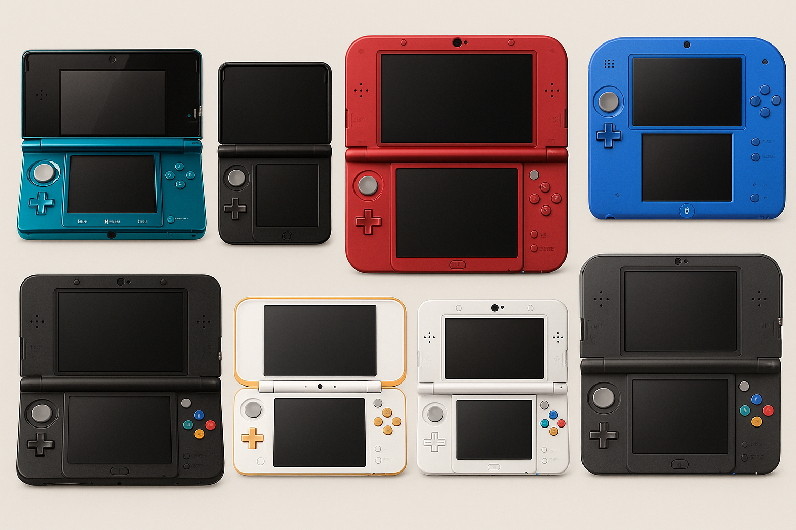
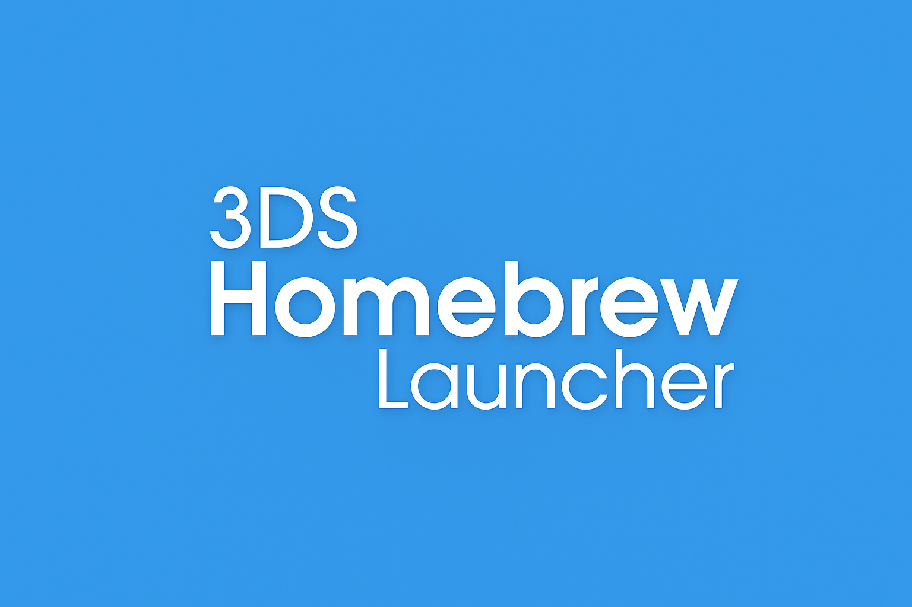
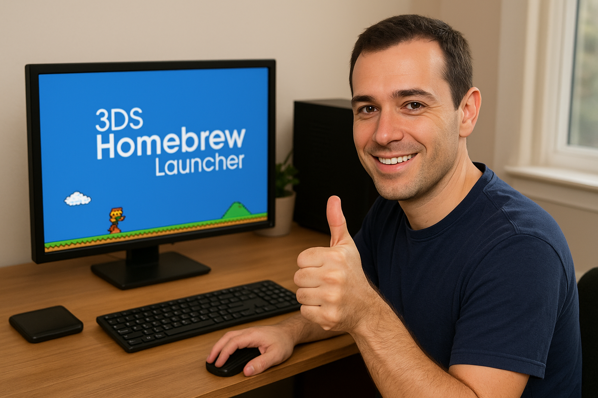

What is 3DS Homebrew?
Every Nintendo 3DS or 2DS console. | Generate an image of every model of the Nintendo 3DS, including the 2DS and the Nintendo New models.
Nintendo 3DS Homebrew refers to the practice of running unofficial software on the Nintendo 3DS family of handheld consoles. This software includes custom games, utilities, emulators, and system tools created by independent developers outside Nintendo’s official ecosystem. Homebrew access typically requires exploiting vulnerabilities in the 3DS firmware to enable custom code execution, bypassing the system’s built-in security restrictions.
Once enabled, homebrew users can install custom applications through launchers like the Homebrew Launcher or FBI (FreeShop replacement), using tools such as Luma3DS custom firmware. These tools allow advanced functions like region-free gaming, save data management, and system customization that the stock firmware restricts. Homebrew has also enabled the development of utilities like GodMode9 for file management and boot-time control, and emulators for classic systems like NES, SNES, and Game Boy Advance.
While homebrew offers expanded functionality and preserves the platform through community-driven development, it exists in a legally gray area. Nintendo’s terms of service prohibit firmware modification, and using homebrew can void warranties or lead to online bans. However, many users employ homebrew responsibly for legitimate purposes, such as backup management, fan translation, and open-source development, rather than piracy.
Why develop 3DS Homebrew Apps?
3DS Homebrew Launcher | Generate an image of the 3DS Homebrew Launcher splashscreen.
Developing 3DS homebrew apps allows programmers to expand the functionality of the Nintendo 3DS beyond what Nintendo officially permits. The console’s hardware and dual-screen layout provide a unique environment for experimentation, letting developers create custom games, tools, and emulators that explore the system’s full potential. By bypassing firmware limitations, homebrew developers can directly access hardware features like the GPU, cameras, and Wi-Fi modules, offering a deeper understanding of embedded system programming.
Homebrew development also strengthens the 3DS community by promoting creativity and technical learning. Many programmers use it as an entry point into low-level C or C++ development, reverse engineering, and console architecture. Shared projects, such as custom launchers, open-source libraries, and fan-made ports, foster collaboration and skill-building. This learning-driven culture has sustained the 3DS long after its commercial peak, turning the console into a valuable educational and hobbyist platform.
Additionally, homebrew development preserves gaming history and broadens user accessibility. Developers can design tools to back up save data, translate region-locked games, or emulate older systems that are no longer supported. These contributions keep classic games playable and promote fair use of owned content. For many, developing homebrew is not about circumventing Nintendo’s controls but about maintaining the console’s relevance and contributing to a lasting open-source ecosystem.
Where to Find 3DS Homebrew and Use It
3DS homebrew software can be found through trusted community resources and open-source repositories dedicated to console modification. The most widely used source is 3ds.hacks.guide, which provides a detailed, regularly updated walkthrough for safely installing custom firmware and the Homebrew Launcher. After setup, users can access applications through GitHub repositories or dedicated community forums such as GBAtemp, which host user-made tools, games, and emulators. It is essential to avoid unofficial or pirated content from random file-sharing sites, as these often include malware or violate copyright law.
Image of the HShop icon for 3DS homebrew. | Generate an image for the logo of hShop, a 3DS Homebrew Application.
Once installed, homebrew apps can be used directly from the 3DS HOME Menu through loaders such as the Homebrew Launcher or FBI. These loaders allow users to run custom games, manage files, and install CIA packages created by the homebrew community. To operate safely, users should keep backups of system data, stay within legal boundaries, and use verified homebrew projects only.
Recommended sources and tools can be found below.
- FBI — CIA file installer for homebrew apps
- Homebrew Launcher — main interface for running custom applications
- Luma3DS — popular custom firmware for booting homebrew safely
- GBAtemp.net — active discussion and release forum
- GitHub — for open-source 3DS homebrew apps
- hShop — a replacement for the Nintendo eShop
How to Start
Man making a 3DS Homebrew game and testing it. | Generate an image of a man giving a thumbs up looking at the camera while he is making a 3DS Homebrew game on his desktop.
To start developing 3DS homebrew, the first step is setting up the necessary tools and environment. Install a C compiler such as devkitARM, which is part of the devkitPro toolkit specifically made for Nintendo handheld development. Next, configure the devkitPro package manager and download libraries like citro3d and citro2d for graphics handling, as well as the 3ds-examples repository for reference code. With these tools installed, you can build and compile basic applications into .3dsx or .cia formats that the Homebrew Launcher or Luma3DS can execute. A text editor like VSCode or Notepad++ can be used to write code, while the Makefile system manages compilation.
Once your environment is ready, begin by creating simple programs to understand the console’s structure and API usage. Start with basic examples that draw text, handle button input, or display 2D sprites. Gradually move to more complex projects involving sound, file I/O, and networking. The 3DS homebrew community on GitHub and GBAtemp provides extensive resources, libraries, and tutorials for building and debugging applications. Understanding C or C++ is essential, as most 3DS development relies on these languages. With consistent testing and learning, you can build original tools, games, or ports optimized for the 3DS hardware.
For a simplified list of steps to take, visit the "A Schedule for Developing Homebrew" page.
A Schedule for Developing Homebrew
Below you will find an extremely simplified table for learning how to develop homebrew. It will be useful for understanding the code behind homebrew as well as learning the C language.
| Part # | Task 1 | Task 2 | Amount of Time Needed (Total) |
|---|---|---|---|
| 1: Downloading Tools | Download VSCode, devkitPro, and Citra emulator. | Mod your 3DS (optional but recommended). | 45 Minutes - 1 Hour |
| 2: File Setup | Set up Makefile to convert C into a .3dsx (or CIA) file. | Set up a basic C file that prints text to the 3DS console (make sure the console is on the bottom screen). | 30 Minutes - 1 Hour |
| 3: Testing and Debugging | Use MINGW64 console (found by default in C:/devkitPro/msys2/ folder) to make the .3dsx file. | Test the file in citra-qt (the Citra Emulator executable file), debug if necessary. | 15 Minutes or more if debugging is needed. |
| 4: Add Graphics | Use the citro2d library to initialize graphics and print a rectangle to the top screen. | Go back to MINGW64 and enter "make clean" first, and then enter "make" after. Test in citra-qt. | 30 Minutes or more if debugging is necessary. |
| 5: Add Button Inputs | Using libctru, add a u32 kDown variable and a u32 kHeld variable along with KEY_? (replace ? with a valid 3DS button) | Make the button inputs: (1) Print Text to the bottom screen console, and (2) Draw a Circle on the top screen. Repeat Part 4 Task 2. | 30 Minutes or more if debugging is necessary. |
| 6: Brainstorming an Idea | Brainstorm the basic game, app, or utility that you want to make. | Make a schedule for what you want to make, and then make it! Use libctru and citro2d documentation for reference. | Depends on how complex or big the project is. |
Man reading 3DS homebrew development schedule. | Generate an image of a man reading a schedule titled "3DS Homebrew Development Schedule"
As long as you want to do so, you can develop 3DS homebrew software at any time.
About Me
A picture of James at his graduation | NO PROMPT
My name is James Karwowski-Mulready, and I am a CS major planning to graduate in Spring 2027. I have a big interest in computer programming and cybersecurity, but I also have an interest in retro technology. My overall career goal is to graduate UNC Charlotte with a Bachelor degree in computer science with a concentration in cybersecurity.
I was born in Connecticut in the year 2007, and in the year 2010, my family moved to Huntersville, NC. In elementary school, I discovered my interest in computer programming (I believe this was in 3rd grade, but it might have been in 2nd grade). In middle school this interest grew, and in my high school years (Fall 2021 to Spring 2025), I took several classes that eventually allowed me to take classes at Central Piedmont Community College while I was in high school. I started taking these classes at the age of 16, and eventually graduated from CPCC in May of 2025, while graduating from high school about a month later.
Before the Fall 2025 semester, I started to look into Nintendo 3DS modding, which includes homebrew development. I was instantly intrigued, and I decided to develop my own 3DS homebrew game called "Pong 2: 3DS Edition".
AI Prompts Used
This section shows what AI prompts were used to generate any code or text.
- Generate a three-paragraph summary of 3DS Homebrew.
- Generate a three-paragraph answer to the question "Why develop 3DS Homebrew Apps?"
- Answer the following in two paragraphs and a list: Where can I find 3DS Homebrew and use it?
- Generate two paragraphs about how to start developing 3DS Homebrew.
- Using HTML, how do I make a single HTML with multiple pages, where only one page is visible at a time?